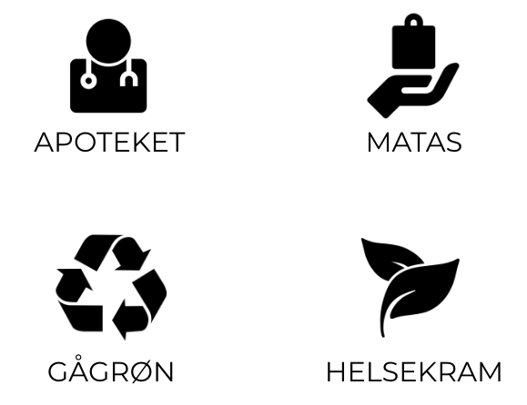
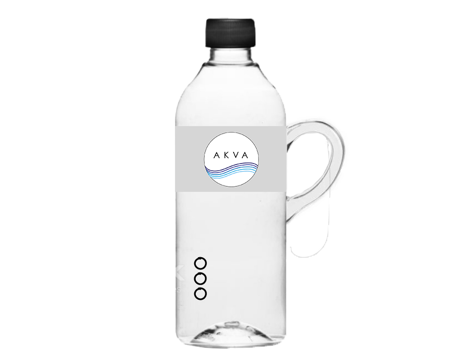

KONCEPT
SHOP
KONTAKT
FIND DIN AKVA FLASKE I FØLGENDE BUTIKKER

DU KAN KØBE FLASKEN ONLINE HER 
KØB HER
MATERIALE: genbrugsplas - BBA frit
Flasken er særligt velegnet til personer med svækket håndfunktion samt personer med rystelser i hånden (tremor) - AKVA flasken hjælper dig med at holde styr på din vandbalance gennem AKVAapp, og påminder dig om at indtage væske i løbet af dagen.